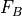
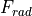
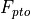
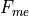
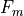
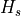
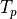

Terminology¶
Term |
Definition |
|---|---|
Added Mass |
|
BEM |
Boundary Element Method |
BEMIO |
Boundary Element Method Input/Output |
BS |
Bretschneider Wave Spectrum |
|
WEC-Sim case directory |
Heave (Z) |
Motion along the Z-axis |
JS |
JONSWAP Spectrum |
Pitch (Ry) |
Rotation about the Y-axis |
PM |
Pierson-Moskowitz Specturm |
PTO |
Power Take-Off |
Radiation Damping |
|
Roll (Rx) |
Rotation about the X-axis |
|
WEC-Sim source code directory |
Surge(x) |
Motion along the X-axis |
Sway (Y) |
Motion along the Y-axis |
Wave Excitation |
|
Yaw (Rz) |
Rotation about the Z-axis |


Variables¶
Variable |
Definition |
|---|---|
|
Frequency dependent radiation added mass (kg) |
|
Added mass at infinite frequency (kg) |
|
Frequency dependent radiation wave damping (N/m/s) |
|
Morison element coefficient of added mass |
|
Quadratic drag coefficient |
|
Mooring damping matrix (N/m/s) |
|
PTO damping coefficient (N/m/s) |
|
Linear (viscous) damping coefficient (N/m/s) |
|
Incident wave (m) |
|
Wave frequency (Hz) |
 |
Net buoyancy restoring force (N) or torque (N.m) |
|
Wave excitation force (N) or torque (N.m) |
 |
Wave radiation force (N) or torque (N.m) |
 |
Power take-off force (N) or torque (N.m) |
 |
Morison element force (N) or torque (N.m) |
|
Damping or friction force (N) or torque (N.m) |
 |
Mooring connection force (N) or torque (N.m) |
|
Gravity (m/s/s) |
|
Water depth (m) |
|
Wave height (m) |
 |
Significant wave height, mean wave height of the tallest third of waves (m) |
|
Spectrally derived significant wave height (m) |
|
Wave number (rad/m), |
|
Linear hydrostatic restoring coefficient (N/m) |
|
Mooring stiffness matrix (N/m) |
|
PTO stiffness coefficient (N/m) |
|
Wave length (m) |
|
Mass of body (kg) |
Spectral moment of k, for k = 0,1,2,… |
|
|
Wave frequency (rad/s), |
|
Wave phase (rad) |
|
Ramp function |
|
Water density (kg/m3) |
|
Simulation time (s) |
|
Ramp time (s) |
|
Wave direction (Degrees) |
 |
Peak period (s) |
|
Translation and rotation displacement vector (m) or (rad) |